V Generative Recursion
If you follow the design recipe of the first four parts, either you turn domain knowledge into code or you exploit the structure of the data definition to organize your code.Some functions merely compose such functions; we group those with the “structural” group. The latter functions typically decompose their arguments into their immediate structural components and then process those components. If one of these immediate components belongs to the same class of data as the input, the function is structurally recursive. While structurally designed functions make up the vast majority of code in the world, some problems cannot be solved with a structural approach to design.
To solve such complicated problems, programmers use generative recursion, a form of recursion that is strictly more powerful than structural recursion. The study of generative recursion is as old as mathematics and is often called the study of algorithms. The inputs of an algorithm represent a problem. An algorithm tends to rearrange a problem into a set of several problems, solve those, and combine their solutions into one overall solution. Often some of these newly generated problems are the same kind of problem as the given one, in which case the algorithm can be reused to solve them. In these cases, the algorithm is recursive, but its recursion uses newly generated data not immediate parts of the input data.
From the very description of generative recursion, you can tell that designing a generative recursive function is more of an ad hoc activity than designing a structurally recursive function. Still, many elements of the general design recipe apply to the design of algorithms, too, and this part of the book illustrates how and how much the design recipe helps. The key to designing algorithms is the “generation” step, which often means dividing up the problem. And figuring out a novel way of dividing a problem requires insight.In Greek, it’s “eureka!” Sometimes very little insight is required. For example, it might just require a bit of commonsense knowledge about breaking up sequences of letters. At other times, it may rely on deep mathematical theorems about numbers. In practice, programmers design simple algorithms on their own and rely on domain specialists for their complex brethren. For either kind, programmers must thoroughly understand the underlying ideas so that they can code up algorithms and have the program communicate with future readers. The best way to get acquainted with the idea is to study a wide range of examples and to develop a sense for the kinds of generative recursions that may show up in the real world.
25 Non-standard Recursion
At this point you have designed numerous functions that employ structural recursion. When you design a function, you know you need to look at the data definition for its major input. If this input is described by a self-referential data definition, you end up with a function that refers to itself basically where the data definition refers to itself.
This chapter presents two sample programs that use recursion differently. They are illustrative of the problems that require some “eureka,” ranging from the obvious idea to the sophisticated insight.
25.1 Recursion without Structure
Imagine you have joined the DrRacket team. The team is working on a sharing service to support collaborations among programmers. Concretely, the next revision of DrRacket is going to enable ISL programmers to share the content of their DrRacket’s definitions area across several computers. Each time one programmer modifies the buffer, the revised DrRacket broadcasts the content of the definitions area to the instances of DrRacket that participate in the sharing session.
Sample Problem Your task is to design the function bundle, which prepares the content of the definitions area for broadcasting. DrRacket hands over the content as a list of 1Strings. The function’s task is to bundle up chunks of individual “letters” into chunks and to thus produce a list of strings—
called chunks— of a given length, called chunk size.
; [List-of 1String] N -> [List-of String] ; bundles chunks of s into strings of length n (define (bundle s n) '())
(list "a" "b" "c" "d" "e" "f" "g" "h")
(list "ab" "cd" "ef" "gh")
(check-expect (bundle (explode "abcdefg") 3) (list "abc" "def" "g"))
(check-expect (bundle '("a" "b") 3) (list "ab"))
(check-expect (bundle '() 3) '())
; N as compound, s considered atomic
; (Processing Two Lists Simultaneously: Case 1)(define (bundle s n) (cond [(zero? n) (...)] [else (... s ... n ... (bundle s (sub1 n)))])) ; [List-of 1String] as compound, n atomic
; (Processing Two Lists Simultaneously: Case 1)(define (bundle s n) (cond [(empty? s) (...)] [else (... s ... n ... (bundle (rest s) n))])) ; [List-of 1String] and N are on equal footing
; (Processing Two Lists Simultaneously: Case 2)(define (bundle s n) (cond [(and (empty? s) (zero? n)) (...)] [else (... s ... n ... (bundle (rest s) (sub1 n)))])) ; consider all possibilities
; (Processing Two Lists Simultaneously: Case 3)(define (bundle s n) (cond [(and (empty? s) (zero? n)) (...)] [(and (cons? s) (zero? n)) (...)] [(and (empty? s) (positive? n)) (...)] [else (... (bundle s (sub1 n)) ... ... (bundle (rest s) n) ...)])) Figure 146: Useless templates for breaking up strings into chunks
The template step reveals that a structural approach cannot
work. Figure 146 shows four possible
templates. Since both arguments to bundle are complex, the first
two consider one of the arguments atomic. That clearly cannot be the case
because the function has to take apart each argument. The third template
is based on the assumption that the two arguments are processed in
lockstep, which is close—
; [List-of 1String] N -> [List-of String] ; bundles chunks of s into strings of length n ; idea take n items and drop n at a time (define (bundle s n) (cond [(empty? s) '()] [else (cons (implode (take s n)) (bundle (drop s n) n))])) ; [List-of X] N -> [List-of X] ; keeps the first n items from l if possible or everything (define (take l n) (cond [(zero? n) '()] [(empty? l) '()] [else (cons (first l) (take (rest l) (sub1 n)))])) ; [List-of X] N -> [List-of X] ; removes the first n items from l if possible or everything (define (drop l n) (cond [(zero? n) l] [(empty? l) l] [else (drop (rest l) (sub1 n))]))
if the given list is '(), the result is '() as decided upon;
otherwise bundle uses take to grab the first n 1Strings from s and implodes them into a plain String;
it then recurs with a list that is shortened by n items, which is accomplished with drop; and
finally, cons combines the string from 2 with the list of strings from 3 to create the result for the complete list.
While the definition of bundle is unusual, the underlying ideas are intuitive and not too different from the functions seen so far. Indeed, if the chunk size n is 1, bundle specializes to a structurally recursive definition. Also, drop is guaranteed to produce an integral part of the given list, not some arbitrarily rearranged version. And this idea is precisely what the next section presents.
Exercise 421. Is (bundle '("a" "b" "c") 0) a proper use of the bundle function? What does it produce? Why?
Exercise 422. Define the function list->chunks. It consumes a list l of arbitrary data and a natural number n. The function’s result is a list of list chunks of size n. Each chunk represents a sub-sequence of items in l.
Use list->chunks to define bundle via function composition.
Exercise 423. Define partition. It consumes a String s and a natural number n. The function produces a list of string chunks of size n.
Hint Have partition produce its natural result for the empty string. For the case where n is 0, see exercise 421.
Note The partition function is somewhat closer to what a cooperative DrRacket environment would need than bundle.
25.2 Recursion that Ignores Structure
Recall that the sort> function from Design by Composition consumes a list of numbers and rearranges it in some order, typically ascending or descending. It proceeds by inserting the first number into the appropriate position of the sorted rest of the list. Put differently, it is a structurally recursive function that reprocesses the result of the natural recursions.
one that contains all the numbers that are strictly smaller than the first
and another one with all those items that are strictly larger.
Figure 148: A graphical illustration of the quick-sort algorithm

To develop an understanding of how the quick-sort algorithm works, let’s walk through an example, quick-sorting (list 11 8 14 7). Figure 148 illustrates the process in a graphical way. The figure consists of a top half, the divide phase, and the bottom half, the conquer phase.
The partition phase is represented with boxes and solid arrows. Three arrows emerge from each boxed list and go to a box with three pieces: the circled pivot element in the middle, to its left the boxed list of numbers smaller than the pivot, and to its right the boxed list of those numbers that are larger than the pivot. Each of these steps isolates at least one number as the pivot, meaning the two neighboring lists are shorter than the given list. Consequently, the overall process terminates too.
Consider the first step where the input is (list 11 8 14 7). The pivot item is 11. Partitioning the list into items larger and smaller than 11 produces (list 8 7) and (list 14). The remaining steps of the partitioning phase work in an analogous way. Partitioning ends when all numbers have been isolated as pivot elements. At this point, you can already read off the final result by reading the pivots from left to right.
The conquering phase is represented with dashed arrows and boxed lists. Three arrows enter each result box: the middle one from a pivot, the left one from the boxed result of sorting the smaller numbers, and the right one from the boxed result of sorting the larger ones. Each step adds at least one number to the result list, the pivot, meaning the lists grow toward the bottom of the diagram. The box at the bottom is a sorted variant of the given list at the top.
Take a look at the left-most, upper-most conquer step. It combines the pivot 7 with two empty lists, resulting in '(7). The next one down corresponds to the partitioning step that isolated 8 and thus yields '(7 8). Each level in the conquering phase mirrors a corresponding level from the partitioning phase. After all, the overall process is recursive.
Exercise 424. Draw a quick-sort diagram like the one in figure 148 for (list 11 9 2 18 12 14 4 1).
; [List-of Number] -> [List-of Number] ; produces a sorted version of alon (define (quick-sort< alon) (cond [(empty? alon) '()] [else ...]))
Since the rest of the list is of unknown size, we leave the task of partitioning the list to two auxiliary functions: smallers and largers. They process the list and filter out those items that are smaller and larger, respectively, than the pivot. Hence each auxiliary function accepts two arguments, namely, a list of numbers and a number. Designing these two functions is an exercise in structural recursion. Try on your own or read the definitions shown in figure 149.
; [List-of Number] -> [List-of Number] ; produces a sorted version of alon ; assume the numbers are all distinct (define (quick-sort< alon) (cond [(empty? alon) '()] [else (local ((define pivot (first alon))) (append (quick-sort< (smallers alon pivot)) (list pivot) (quick-sort< (largers alon pivot))))])) ; [List-of Number] Number -> [List-of Number] (define (largers alon n) (cond [(empty? alon) '()] [else (if (> (first alon) n) (cons (first alon) (largers (rest alon) n)) (largers (rest alon) n))])) ; [List-of Number] Number -> [List-of Number] (define (smallers alon n) (cond [(empty? alon) '()] [else (if (< (first alon) n) (cons (first alon) (smallers (rest alon) n)) (smallers (rest alon) n))]))
(quick-sort< (smallers alon pivot)), which sorts the list of items smaller than the pivot; and
(quick-sort< (largers alon pivot)), which sorts the list of items larger than the pivot.
(quick-sort< (list 11 8 14 7)) == (append (quick-sort< (list 8 7)) (list 11) (quick-sort< (list 14))) == (append (append (quick-sort< (list 7)) (list 8) (quick-sort< '())) (list 11) (quick-sort< (list 14))) == (append (append (append (quick-sort< '()) (list 7) (quick-sort< '())) (list 8) (quick-sort< '())) (list 11) (quick-sort< (list 14))) == (append (append (append '() (list 7) '()) (list 8) '()) (list 11) (quick-sort< (list 14))) == (append (append (list 7) (list 8) '()) (list 11) (quick-sort< (list 14))) ...
Both figure 148 and the calculation also show how quick-sort< completely ignores the structure of the given list. The first recursion works on two distant numbers from the originally given list and the second one on the list’s third item. These recursions aren’t random, but they are certainly not relying on the structure of the data definition.
Contrast quick-sort<’s organization with that of the sort> function from Design by Composition. The design of the latter follows the structural design recipe, yielding a program that processes a list item by item. By splitting the list, quick-sort< can speed up the process of sorting the list, though at the cost of not using plain first and rest.
Exercise 425. Articulate purpose statements for smallers and largers in figure 149.
Exercise 426. Complete the hand-evaluation from above. A close inspection of the evaluation suggests an additional trivial case for quick-sort<. Every time quick-sort< consumes a list of one item, it returns it as is. After all, the sorted version of a list of one item is the list itself.
Modify quick-sort< to take advantage of this observation. Evaluate the example again. How many steps does the revised algorithm save?
Exercise 427. While quick-sort< quickly reduces the size of the problem in many cases, it is inappropriately slow for small problems. Hence people use quick-sort< to reduce the size of the problem and switch to a different sort function when the list is small enough.
Develop a version of quick-sort< that uses sort< (an appropriately adapted variant of sort> from Auxiliary Functions that Recur) if the length of the input is below some threshold.
Exercise 428. If the input to quick-sort< contains the same number several times, the algorithm returns a list that is strictly shorter than the input. Why? Fix the problem so that the output is as long as the input.
Exercise 429. Use filter to define smallers and largers.
Exercise 430. Develop a variant of quick-sort< that uses only one comparison function, say, <. Its partitioning step divides the given list alon into a list that contains the items of alon smaller than the pivot and another one with those that are not smaller.
Use local to package up the program as a single function. Abstract this function so that it consumes a list and a comparison function.
26 Designing Algorithms
The overview for this part already explains that the design of generative recursion functions is more ad hoc than structural design. As the first chapter shows, two generative recursions can radically differ in how they process functions. Both bundle and quick-sort< process lists, but while the former at least respects the sequencing in the given list, the latter rearranges its given list at will. The question is whether a single design recipe can help with the creation of such widely differing functions.
The first section shows how to adapt the process dimension of the design recipe to generative recursion. The second section homes in on another new phenomenon: an algorithm may fail to produce an answer for some of its inputs. Programmers must therefore analyze their programs and supplement the design information with a comment on termination. The remaining sections contrast structural and generative recursion.
26.1 Adapting the Design Recipe
As before, we must represent the problem information as data in our chosen programming language. The choice of a data representation for a problem affects our thinking about the computational process, so some planning ahead is necessary. Alternatively, be prepared to backtrack and to explore different data representations. Regardless, we must analyze the problem information and define data collections.
We also need a signature, a function header, and a purpose statement. Since the generative step has no connection to the structure of the data definition, the purpose statement must go beyond what the function is to compute and also explain how the function computes its result.
It is useful to explain the “how” with function examples, the way we explained bundle and quick-sort< in the previous chapter. That is, while function examples in the structural world merely specify which output the function is to produce for which input, the purpose of examples in the world of generative recursion is to explain the underlying idea behind the computational process.
For bundle, the examples specify how the function acts in general and in certain boundary cases. For quick-sort<, the example in figure 148 illustrates how the function partitions the given list with respect to the pivot item. By adding such worked examples to the purpose statement, we—
the designers— gain an improved understanding of the desired process, and we communicate this understanding to future readers of this code. Our discussion suggests a general template for algorithms. Roughly speaking, the design of an algorithm distinguishes two kinds of problems: those that are trivially solvable and those that are not.For this part of the book, “trivial” is a technical term. If a given problem is trivially solvable, an algorithm produces the matching solution. For example, the problems of sorting an empty list or a one-item list are trivially solvable. A list with many items is a nontrivial problem. For these nontrivial problems, algorithms commonly generate new problems of the same kind as the given one, solve those recursively, and combine the solutions into an overall solution.
Based on this sketch, all algorithms have roughly this organization:(define (generative-recursive-fun problem) (cond [(trivially-solvable? problem) (determine-solution problem)] [else (combine-solutions ... problem ... (generative-recursive-fun (generate-problem-1 problem)) ... (generative-recursive-fun (generate-problem-n problem)))])) The original problem is occasionally needed to combine the solutions for the newly generated problems, which is why it is handed over to combine-solutions.- This template is only a suggestive blueprint, not a definitive shape. Each piece of the template is to remind us to think about the following four questions:
What is a trivially solvable problem?
How are trivial solutions solved?
How does the algorithm generate new problems that are more easily solvable than the original one? Is there one new problem that we generate or are there several?
Is the solution of the given problem the same as the solution of (one of) the new problems? Or, do we need to combine the solutions to create a solution for the original problem? And, if so, do we need anything from the original problem data?
To define the algorithm as a function, we must express the answers to these four questions as functions and expressions in terms of the chosen data representation.For this step, the table-driven attempt from Designing with Self-Referential Data Definitions might help again. Reconsider the quick-sort< example from Recursion that Ignores Structure. The central idea behind quick-sort< is to divide a given list into a list of smaller items and larger items and to sort those separately. Figure 150 spells out how some simple numeric examples work out for the nontrivial cases. From these examples it is straightforward to guess that the answer to the fourth question is to append the sorted list of smaller numbers, the pivot number, and the sorted list of larger numbers, which can easily be translated into code.
Once the function is complete, it is time to test it. As before, the goal of testing is to discover and eliminate bugs.
alon
pivot
sorted, smaller
sorted, larger
expected
'(2 3 1 4)
2
'(1)
'(3 4)
'(1 2 3 4)
'(2 0 1 4)
2
'(0 1)
'(3)
'(0 1 2 4)
'(3 0 1 4)
3
'(0 1)
'(4)
'(0 1 3 4)
Figure 150: The table-based guessing approach for combining solutions
Exercise 431. Answer the four key questions for the bundle problem and the first three questions for the quick-sort< problem. How many instances of generate-problem are needed?
Exercise 432. Exercise 219 introduces the function food-create, which consumes a Posn and produces a randomly chosen Posn that is guaranteed to be distinct from the given one. First reformulate the two functions as a single definition, using local; then justify the design of food-create.
26.2 Termination
(bundle '("a" "b" "c") 0) == (cons (implode (take '("a" "b" "c") 0)) (bundle (drop '("a" "b" "c") 0))) == (cons (implode '()) (bundle (drop '("a" "b" "c") 0))) == (cons "" (bundle (drop '("a" "b" "c") 0))) == (cons "" (bundle '("a" "b" "c") 0))
Contrast this insight with the designs presented in the first four parts. Every function designed according to the recipe either produces an answer or raises an error signal for every input. After all, the recipe dictates that each natural recursion consumes an immediate piece of the input, not the input itself. Because data is constructed in a hierarchical manner, input shrinks at every stage. Eventually the function is applied to an atomic piece of data, and the recursion stops.
This reminder also explains why generative recursive functions may diverge. According to the design recipe for generative recursion, an algorithm may generate new problems without any limitations. If the design recipe required a guarantee that the new problems were “smaller” than the given one, it would terminate.The theory of computation actually shows that we must lift these restrictions eventually. But, imposing such a restriction would needlessly complicate the design of functions such as bundle.
In this book, we therefore keep the first six steps of the design recipe mostly intact and supplement them with a seventh step: the termination argument. Figure 151 presents the first part of the design recipe for generative recursion, and figure 152 the second one. They show the design recipe in the conventional tabular form. The unmodified steps come with a dash in the activity column. Others come with comments on how the design recipe for generative recursion differs from the one for structural recursion. The last row in figure 152 is completely new.
A termination argument comes in one of two forms. The first one argues why each recursive call works on a problem that is smaller than the given one. Often this argument is straightforward; on rare occasions, you will need to work with a mathematician to prove a theorem for such arguments. The second kind illustrates with an example that the function may not terminate.You cannot define a predicate for this class; otherwise you could modify the function and ensure that it always terminates. Ideally it should also describe the class of data for which the function may loop. In rare cases, you may not be able to make either argument because computer science does not know enough yet.
steps
outcome
activity
problem analysis
—
header
a purpose statement concerning the “how” of the function
supplement the explanation of what the function computes with a one-liner on how it computes the result
examples
examples and tests
work through the “how” with several examples
template
fixed template
—
steps
outcome
activity
definition
full-fledged function definition
formulate conditions for trivially solvable problems; formulate answers for these trivial cases; determine how to generate new problems for nontrivial problems, possibly using auxiliary functions; determine how to combine the solutions of the generated problems into a solution for the given problem
tests
discover mistakes
—
termination
(1) a size argument for each recursive call or (2) examples of exceptions to termination
investigate whether the problem data for each recursive data is smaller than the given data; find examples that cause the function to loop
; [List-of 1String] N -> [List-of String] ; bundles sub-sequences of s into strings of length n ; termination (bundle s 0) loops unless s is '() (define (bundle s n) ...)
; [List-of Number] -> [List-of Number] ; creates a sorted variant of alon ; termination both recursive calls to quick-sort< ; receive list that miss the pivot item (define (quick-sort< alon) ...)
Exercise 433. Develop a checked version of bundle that is guaranteed to terminate for all inputs. It may signal an error for those cases where the original version loops.
; [List-of Number] Number -> [List-of Number] (define (smallers l n) (cond [(empty? l) '()] [else (if (<= (first l) n) (cons (first l) (smallers (rest l) n)) (smallers (rest l) n))]))
Exercise 435. When you worked on exercise 430 or exercise 428, you may have produced looping solutions. Similarly, exercise 434 actually reveals how brittle the termination argument is for quick-sort<. In all cases, the argument relies on the idea that smallers and largers produce lists that are maximally as long as the given list, and on our understanding that neither includes the given pivot in the result.
Based on this explanation, modify the definition of quick-sort< so that both functions receive lists that are shorter than the given one.
Exercise 436. Formulate a termination argument for food-create from exercise 432.
26.3 Structural versus Generative Recursion
The template for algorithms is so general that it includes structurally recursive functions. Consider the left side of figure 153. This template is specialized to deal with one trivial clause and one generative step. If we replace trivial? with empty? and generate with rest, we get a template for list-processing functions; see the right side of figure 153.
(define (general P) (cond [(trivial? P) (solve P)] [else (combine-solutions P (general (generate P)))]))
(define (special P) (cond [(empty? P) (solve P)] [else (combine-solutions P (special (rest P)))]))
special computes the length of its input,
special negates each number on the given list of numbers, and
special uppercases the given list of strings.
Now you may wonder whether there is a real difference between structural recursive design and the one for generative recursion. Our answer is “it depends.” Of course, we could say that all functions using structural recursion are just special cases of generative recursion. This “everything is equal” attitude, however, is of no help if we wish to understand the process of designing functions. It confuses two kinds of design that require different forms of knowledge and that have different consequences. One relies on a systematic data analysis and not much more; the other requires a deep, often mathematical, insight into the problem-solving process itself. One leads programmers to naturally terminating functions; the other requires a termination argument. Conflating these two approaches is unhelpful.
26.4 Making Choices
When you interact with a function f that sorts lists of numbers, it is impossible for you to know whether f is sort< or quick-sort<. The two functions behave in an observably equivalent way.Observable equivalence is a central concept from the study of programming languages. This raises the question of which of the two a programming language should provide. More generally, when we can design a function using structural recursion and generative recursion, we must figure out which one to pick.
6 is evenly divisible by 1, 2, 3, and 6;
25 is evenly divisible by 1, 5, and 25.
18 is evenly divisible by 1, 2, 3, 6, 9, and 18;
24 is evenly divisible by 1, 2, 3, 4, 6, 8, 12, and 24.
; N[>= 1] N[>= 1] -> N ; finds the greatest common divisor of n and m (check-expect (gcd 6 25) 1) (check-expect (gcd 18 24) 6) (define (gcd n m) 42)
From here we design both a structural and a generative recursive solution. Since this part of the book is about generative recursion, we merely present a structural solution in figure 154 and leave the design ideas to exercises. Just note that (= (remainder n i) (remainder m i) 0) encodes the idea that both n and m are “evenly divisible” by i.
(define (gcd-structural n m) (local (; N -> N ; determines the gcd of n and m less than i (define (greatest-divisor-<= i) (cond [(= i 1) 1] [else (if (= (remainder n i) (remainder m i) 0) i (greatest-divisor-<= (- i 1)))]))) (greatest-divisor-<= (min n m)))) Figure 154: Finding the greatest common divisor via structural recursion
Exercise 438. In your words: how does greatest-divisor-<= work? Use the design recipe to find the right words. Why does the locally defined greatest-divisor-<= recur on (min n m)?
(gcd-structural 101135853 45014640)
(time (gcd-structural 101135853 45014640))
for two natural numbers, L for large and S for small, the greatest common divisor is equal to the greatest common divisor of S and the remainder of L divided by S.
The given numbers are 18 and 24.
According to the insight, they have the same gcd as 18 and 6.
And these two have the same greatest common divisor as 6 and 0.
when the smaller of the numbers is 0, we face a trivial case;
the larger of the two numbers is the solution in the trivial case;
generating a new problem requires one remainder operation; and
the above equation tells us that the answer to the newly generated problem is also the answer to the originally given problem.
(define (gcd-generative n m) (local (; N[>= 1] N[>=1] -> N ; generative recursion ; (gcd L S) == (gcd S (remainder L S)) (define (clever-gcd L S) (cond [(= S 0) L] [else (clever-gcd S (remainder L S))]))) (clever-gcd (max m n) (min m n)))) Figure 155: Finding the greatest common divisor via generative recursion
Figure 155 presents the definition of the algorithm. The local definition introduces the workhorse of the function: clever-gcd. Its first cond line discovers the trivial case by comparing smaller to 0 and produces the matching solution. The generative step uses smaller as the new first argument and (remainder large small) as the new second argument to clever-gcd.
(gcd-generative 101135853 45014640)
... == (clever-gcd 101135853 45014640) == (clever-gcd 45014640 11106573) == (clever-gcd 11106573 588348) == (clever-gcd 588348 516309) == (clever-gcd 516309 72039) == (clever-gcd 72039 12036) == (clever-gcd 12036 11859) == (clever-gcd 11859 177) == (clever-gcd 177 0)
(time (gcd-generative 101135853 45014640))
You may now think that generative recursion design has discovered a much
faster solution to the gcd problem, and you may conclude that
generative recursion is always the right way to go. This judgment is too
rash for three reasons. First, even a well-designed algorithm isn’t always
faster than an equivalent structurally recursive function. For example,
quick-sort< wins only for large lists; for small ones, the standard
sort< function is faster. Worse, a badly designed algorithm can
wreak havoc on the performance of a program. Second, it is typically easier
to design a function using the recipe for structural recursion. Conversely,
designing an algorithm requires an idea of how to generate new problems, a
step that often requires some deep insight. Finally, programmers who read
functions can easily understand structurally recursive functions, even
without much documentation. The generative step of an algorithm, though, is
based on a “eureka!” and, without a good explanation, is difficult to
understand for future readers—
Experience shows that most functions in a program employ structural design;
only a few exploit generative recursion. When we encounter a situation
where a design could use the recipe for either structural or generative
recursion, the best approach is to start with a structural version. If the
result turns out to be too slow for the task at hand—
(quick-sort< (list 10 6 8 9 14 12 3 11 14 16 2))
(quick-sort< (list 1 2 3 4 5 6 7 8 9 10 11 12 13 14))
Exercise 442. Add sort< and quick-sort< to the definitions area. Run tests on the functions to ensure that they work on basic examples. Also develop create-tests, a function that creates large test cases randomly. Then explore how fast each works on various lists.
Does the experiment confirm the claim that the plain sort< function often wins over quick-sort< for short lists and vice versa?
Determine the cross-over point. Use it to build a clever-sort function that behaves like quick-sort< for large lists and like sort< for lists below this cross-over point. Compare with exercise 427.
(define (gcd-structural n m) (cond [(and (= n 1) (= m 1)) ...] [(and (> n 1) (= m 1)) ...] [(and (= n 1) (> m 1)) ...] [else (... (gcd-structural (sub1 n) (sub1 m)) ... ... (gcd-structural (sub1 n) m) ... ... (gcd-structural n (sub1 m)) ...)]))
Exercise 444. Exercise 443 means that the design for gcd-structural calls for some planning and a design-by-composition approach.
(define (gcd-structural S L) (largest-common (divisors S S) (divisors S L))) ; N[>= 1] N[>= 1] -> [List-of N] ; computes the divisors of l smaller or equal to k (define (divisors k l) '()) ; [List-of N] [List-of N] -> N ; finds the largest number common to both k and l (define (largest-common k l) 1)
27 Variations on the Theme
The design of an algorithm starts with an informal description of a process of how to create a problem that is more easily solvable than the given one and whose solution contributes to the solution of the given problem. Coming up with this kind of idea requires inspiration, immersion in an application domain, and experience with many different kinds of examples.
This chapter presents several illustrative examples of algorithms. Some are directly drawn from mathematics, which is the source of many ideas; others come from computational settings. The first example is a graphical illustration of our principle: the Sierpinski triangle. The second one explains the divide-and-conquer principle with the simple mathematical example of finding the root of a function. It then shows how to turn this idea into a fast algorithm for searching sequences, a widely used application. The third section concerns “parsing” of sequences of 1Strings, also a common problem in real-world programming.
27.1 Fractals, a First Taste
Fractals play an important role in computational geometry. Flake writes in The Computational Beauty of Nature (The MIT Press, 1998) that “geometry can be extended to account for objects with a fractional dimension. Such objects, known as fractals, come very close to capturing the richness and variety of forms found in nature. Fractals possess structural self-similarity on multiple ... scales, meaning that a piece of a fractal will often look like the whole.”

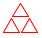
Figure 156 displays an example of a fractal shape, known as the Sierpinski triangle. The basic shape is an (equilateral) triangle, like the one in the center. When this triangle is composed sufficiently many times in a triangular fashion, we get the left-most shape.
The right-most image in figure 156 explains the generative step. When taken by itself, it says that, given a triangle, find the midpoint of each side and connect them to each other. This step yields four triangles; repeat the process for each of the outer of these three triangles unless these triangles are too small.
> (s-triangle 3) 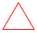
> (beside (s-triangle 3) (s-triangle 3))
> (above (s-triangle 3) (beside (s-triangle 3) (s-triangle 3))) 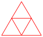
This section uses the alternative description to design the Sierpinski algorithm; Accumulators as Results deals with the first description. Given that the goal is to generate the image of an equilateral triangle, we encode the problem with a (positive) number, the length of the triangle’s side. This decision yields a signature, a purpose statement, and a header:
; Number -> Image ; creates Sierpinski triangle of size side (define (sierpinski side) (triangle side 'outline 'red))
When the given number is so small that drawing triangles inside of it is pointless, the problem is trivial.
In that case, it suffices to generate a triangle.
Otherwise, the algorithm must generate a Sierpinski triangle of size side / 2 because juxtaposing two such triangles in either direction yields one of size side.
- If half-sized is the Sierpinski triangle of size side / 2, thenis a Sierpinski triangle of size side.
(define SMALL 4) ; a size measure in terms of pixels (define small-triangle (triangle SMALL 'outline 'red)) ; Number -> Image ; generative creates Sierpinski Δ of size side by generating ; one for (/ side 2) and placing one copy above two copies (check-expect (sierpinski SMALL) small-triangle) (check-expect (sierpinski (* 2 SMALL)) (above small-triangle (beside small-triangle small-triangle))) (define (sierpinski side) (cond [(<= side SMALL) (triangle side 'outline 'red)] [else (local ((define half-sized (sierpinski (/ side 2)))) (above half-sized (beside half-sized half-sized)))]))
With these answers, it is straightforward to define the function. Figure 157 spells out the details. The “triviality condition” translates to (<= side SMALL) for some constant SMALL. For the trivial answer, the function returns a triangle of the given size. In the recursive case, a local expression introduces the name half-sized for the Sierpinski triangle that is half as big as the specified size. Once the recursive call has generated the small Sierpinski triangle, it composes this image via above and beside.
; creates Sierpinski triangle of size side by ...
; ... generating one of size (/ side 2) and ; placing one copy above two composed copies
Since sierpinski is based on generative recursion, defining the function and testing it is not the last step. We must also consider why the algorithm terminates for any given legal input. The input of sierpinski is a single positive number. If the number is smaller than SMALL, the algorithm terminates. Otherwise, the recursive call uses a number that is half as large as the given one. Hence, the algorithm must terminate for all positive sides, assuming SMALL is positive, too.
One view of the Sierpinski process is that it divides its problem in half until it is immediately solvable. With a little imagination, you can see that the process can be used to search for numbers with certain properties. The next section explains this idea in detail.
27.2 Binary Search
f(r) = 0.
Figure 158: A numeric function f with root in interval [a,b] (stage 1)

Sample Problem A rocket is flying at the constant speed of v miles per hour on a straight line toward some target, d0 miles away. It then accelerates at the rate of a miles per hour squared for t hours. When will it hit its target?
d(t) = (v * t + 1/2 * a * t2)
d0 = (v * t0 + 1/2 * a * t02)
Generally such problems call for more complexity than quadratic equations. In response, mathematicians have spent the last few centuries developing root-finding methods for different types of functions. In this section, we study a solution that is based on the Intermediate Value Theorem (IVT), an early result of analysis. The resulting algorithm is a primary example of generative recursion based on a mathematical theorem. Computer scientists have generalized it to the binary search algorithm.
The Intermediate Value Theorem says that a continuous function f has a root in an interval [a,b] if f(a) and f(b) are on opposite sides of the x-axis. By continuous we mean a function that doesn’t “jump,” that doesn’t have gaps, and that proceeds on a “smooth” path.
Figure 158 illustrates the Intermediate Value Theorem. The function f is a continuous function, as suggested by the uninterrupted, smooth graph. It is below the x-axis at a and above at b, and indeed, it intersects the x-axis somewhere in this interval, labeled “range 1” in the figure.
m = (a+b) / 2
; [Number -> Number] Number Number -> Number ; determines R such that f has a root in [R,(+ R ε)] ; assume f is continuous ; (2) (or (<= (f left) 0 (f right)) (<= (f right) 0 (f left))) ; generative divides interval in half, the root is in ; one of the two halves, picks according to (2) (define (find-root f left right) 0)
> (poly 2) 0
> (poly 4) 0
step
left
f left
right
f right
mid
f mid
n=1
3
-1
6.00
8.00
4.50
1.25
n=2
3
-1
4.50
1.25
?
?
- We need a condition that describes when the problem is solved and a matching answer. Given our discussion so far, this is straightforward:
The matching result in the trivial case is left.
- For the generative case, we need an expression that generates new problems for find-root. According to our informal description, this step requires determining the midpoint and its function value:The midpoint is then used to pick the next interval. Following IVT, the interval [left,mid] is the next candidate if
(or (<= (f left) 0 [email protected]) (<= [email protected] 0 (f left)))
while [mid,right] is used for the recursive call if(or (<= [email protected] 0 (f right)) (<= (f right) 0 [email protected]))
Translated into code, the body of local must be a conditional:(cond [(or (<= (f left) 0 [email protected]) (<= [email protected] 0 (f left))) (... (find-root f left mid) ...)] [(or (<= [email protected] 0 (f right)) (<= (f right) 0 [email protected])) (... (find-root f mid right) ...)]) In both clauses, we use find-root to continue the search. The answer to the final question is obvious. Since the recursive call to find-root finds the root of f, there is nothing else to do.
; [Number -> Number] Number Number -> Number ; determines R such that f has a root in [R,(+ R ε)] ; assume f is continuous ; assume (or (<= (f left) 0 (f right)) (<= (f right) 0 (f left))) ; generative divides interval in half, the root is in one of the two ; halves, picks according to assumption (define (find-root f left right) (cond [(<= (- right left) ε) left] [else (local ((define mid (/ (+ left right) 2)) (define [email protected] (f mid))) (cond [(or (<= (f left) 0 [email protected]) (<= [email protected] 0 (f left))) (find-root f left mid)] [(or (<= [email protected] 0 (f right)) (<= (f right) 0 [email protected])) (find-root f mid right)]))]))
Exercise 446. Add the test from exercise 445 to the program in figure 159. Experiment with different values for ε.
Exercise 447. The poly function has two roots. Use find-root with poly and an interval that contains both roots.
Exercise 448. The find-root algorithm terminates for all (continuous) f, left, and right for which the assumption holds. Why? Formulate a termination argument.
Hint Suppose the arguments of find-root describe an interval of size S1. How large is the distance between left and right for the first and second recursive call to find-root? After how many steps is (- right left) smaller than or equal to ε?
Exercise 449. As presented in figure 159, find-root computes the value of f for each boundary value twice to generate the next interval. Use local to avoid this recomputation.
In addition, find-root recomputes the value of a boundary across recursive calls. For example, (find-root f left right) computes (f left) and, if [left,mid] is chosen as the next interval, find-root computes (f left) again. Introduce a helper function that is like find-root but consumes not only left and right but also (f left) and (f right) at each recursive stage.
How many recomputations of (f left) does this design maximally avoid? Note The two additional arguments to this helper function change at each recursive stage, but the change is related to the change in the numeric arguments. These arguments are so-called accumulators, which are the topic of Accumulators.
Exercise 450. A function f is monotonically increasing if (<= (f a) (f b)) holds whenever (< a b) holds. Simplify find-root assuming the given function is not only continuous but also monotonically increasing.
(define-struct table [length array]) ; A Table is a structure: ; (make-table N [N -> Number])
(define table1 (make-table 3 (lambda (i) i))) ; N -> Number (define (a2 i) (if (= i 0) pi (error "table2 is not defined for i =!= 0"))) (define table2 (make-table 1 a2))
; Table N -> Number ; looks up the ith value in array of t (define (table-ref t i) ((table-array t) i))
The root of a table t is a number in (table-array t) that is close to 0. A root index is a natural number i such that (table-ref t i) is a root of table t. A table t is monotonically increasing if (table-ref t 0) is less than (table-ref t 1), (table-ref t 1) is less than (table-ref t 2), and so on.
Design find-linear. The function consumes a monotonically increasing table and finds the smallest index for a root of the table. Use the structural recipe for N, proceeding from 0 through 1, 2, and so on to the array-length of the given table. This kind of root-finding process is often called a linear search.
Design find-binary, which also finds the smallest index for the root of a monotonically increasing table but uses generative recursion to do so. Like ordinary binary search, the algorithm narrows an interval down to the smallest possible size and then chooses the index. Don’t forget to formulate a termination argument.
Hint The key problem is that a table index is a natural number, not a plain number. Hence the interval boundary arguments for find must be natural numbers. Consider how this observation changes (1) the nature of trivially solvable problem instances, (2) the midpoint computation, (3) and the decision as to which interval to generate next. To make this concrete, imagine a table with 1024 slots and the root at 1023. How many calls to find are needed in find-linear and find-binary, respectively?
27.3 A Glimpse at Parsing
; A File is one of: ; – '() ; – (cons "\n" File) ; – (cons 1String File) ; interpretation represents the content of a file ; "\n" is the newline character
(list "h" "o" "w" " " "a" "r" "e" " " "y" "o" "u" "\n" "d" "o" "i" "n" "g" "?" "\n" "a" "n" "y" " " "p" "r" "o" "g" "r" "e" "s" "s" "?")
(list (list "h" "o" "w" " " "a" "r" "e" " " "y" "o" "u") (list "d" "o" "i" "n" "g" "?") (list "a" "n" "y" " " "p" "r" "o" "g" "r" "e" "s" "s" "?"))
(list "a" "b" "c" "\n" "d" "e" "\n" "f" "g" "h" "\n")
The problem of turning a sequence of 1Strings into a list of lines is called the parsing problem. Many programming languages provide functions that retrieve lines, words, numbers, and other kinds of so-called tokens from files. But even if they do, it is common that programs need to parse these tokens even further. This section provides a glimpse at a parsing technique. Parsing is so complex and so central to the creation of full-fledged software applications, however, that most undergraduate curricula come with at least one course on parsing. So do not think you can tackle real parsing problems properly even after mastering this section.
; File -> [List-of Line] ; converts a file into a list of lines (check-expect (file->list-of-lines (list "a" "b" "c" "\n" "d" "e" "\n" "f" "g" "h" "\n")) (list (list "a" "b" "c") (list "d" "e") (list "f" "g" "h"))) (define (file->list-of-lines afile) '())
The problem is trivially solvable if the file is '().
In that case, the file doesn’t contain a line.
Otherwise, the file contains at least one "\n" or some other 1String. These items—
up to and including the first "\n", if any— must be separated from the rest of the File. The remainder is a new problem of the same kind that file->list-of-lines can solve. It then suffices to cons the initial segment as a single line to the list of Lines that result from the rest of the File.
; File -> [List-of Line] ; converts a file into a list of lines (define (file->list-of-lines afile) (cond [(empty? afile) '()] [else (cons (first-line afile) (file->list-of-lines (remove-first-line afile)))])) ; File -> Line (define (first-line afile) (cond [(empty? afile) '()] [(string=? (first afile) NEWLINE) '()] [else (cons (first afile) (first-line (rest afile)))])) ; File -> Line (define (remove-first-line afile) (cond [(empty? afile) '()] [(string=? (first afile) NEWLINE) (rest afile)] [else (remove-first-line (rest afile))])) (define NEWLINE "\n") ; the 1String
From here, it is easy to create the rest of the program. In file->list-of-lines, the answer in the first clause must be '() because an empty file does not contain any lines. The answer in the second clause must cons the value of (first-line afile) onto the value (file->list-of-lines (remove-first-line afile)), because the first expression computes the first line and the second one computes the rest of the lines. Finally, the auxiliary functions traverse their inputs in a structurally recursive manner; their development is a straightforward exercise. Figure 160 presents the complete program code.
(file->list-of-lines (list "a" "b" "c" "\n" "d" "e" "\n" "f" "g" "h" "\n")) == (cons (list "a" "b" "c") (file->list-of-lines (list "d" "e" "\n" "f" "g" "h" "\n"))) == (cons (list "a" "b" "c") (cons (list "d" "e") (file->list-of-lines (list "f" "g" "h" "\n")))) == (cons (list "a" "b" "c") (cons (list "d" "e") (cons (list "f" "g" "h") (file->list-of-lines '())))) == (cons (list "a" "b" "c") (cons (list "d" "e") (cons (list "f" "g" "h") '())))
Exercise 452. Both first-line and remove-first-line are missing purpose statements. Articulate proper statements.
Exercise 453. Design the function tokenize. It turns a Line into a list of tokens. Here a token is either a 1String or a String that consists of lower-case letters and nothing else. That is, all white-space 1Strings are dropped; all other non-letters remain as is; and all consecutive letters are bundled into “words.” Hint Read up on the string-whitespace? function.
(check-expect (create-matrix 2 (list 1 2 3 4)) (list (list 1 2) (list 3 4)))
28 Mathematical Examples
Many solutions to mathematical problems employ generative recursion. A future programmer must get to know such solutions for two reasons. On the one hand, a fair number of programming tasks are essentially about turning these kinds of mathematical ideas into programs. On the other hand, practicing with such mathematical problems often proves inspirational for the design of algorithms. This chapter deals with three such problems.
28.1 Newton’s Method
Binary Search introduces one method for finding the root of a mathematical function. As the exercises in the same section sketch, the method naturally generalizes to computational problems, such as finding certain values in tables, vectors, and arrays. In mathematical applications, programmers tend to employ methods that originate from analytical mathematics. A prominent one is due to Newton. Like binary search, the so-called Newton method repeatedly improves an approximation to the root until it is “close enough.” Starting from a guess, say, r1, the essence of the process is to construct the tangent of f at r1 and to determine its root. While the tangent approximates the function, it is also straightforward to determine its root. By repeating this process sufficiently often,Newton proved this fact. an algorithm can find a root r for which (f r) is close enough to 0.
Exercise 455. Translate this mathematical formula into the ISL+ function slope, which maps function f and a number r1 to the slope of f at r1. Assume that ε is a global constant. For your examples, use functions whose exact slope you can figure out, say, horizontal lines, linear functions, and perhaps polynomials if you know some calculus.
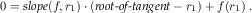
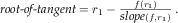
Exercise 456. Design root-of-tangent, a function that maps f and r1 to the root of the tangent through (r1,(f r1)).
; [Number -> Number] Number -> Number ; finds a number r such that (f r) is small ; generative repeatedly generates improved guesses (define (newton f r1) 1.0)
- If (f r1) is close enough to 0, the problem is solved. Close to 0 could mean (f r1) is a small positive number or a small negative number. Hence we check its absolute value:
The solution is r1.
The generative step of the algorithm consists of finding the root of the tangent of f at r1, which generates the next guess. By applying newton to f and this new guess, we resume the process.
The answer of the recursion is also the answer of the original problem.
; [Number -> Number] Number -> Number ; finds a number r such that (<= (abs (f r)) ε) (check-within (newton poly 1) 2 ε) (check-within (newton poly 3.5) 4 ε) (define (newton f r1) (cond [(<= (abs (f r1)) ε) r1] [else (newton f (root-of-tangent f r1))])) ; see exercise 455 (define (slope f r) ...) ; see exercise 456 (define (root-of-tangent f r) ...)
Figure 161 displays newton. It includes two tests that are derived from the tests in Binary Search for find-root. After all, both functions search for the root of a function, and poly has two known roots.

> (poly 3) -1
> (newton poly 3) /:division by zero
> (slope poly 3) 0
> (root-of-tangent poly 3) /:division by zero
> (newton poly 2.9999)
> (newton poly #i3.0)
> (slope poly #i3.0) #i0.0
> (root-of-tangent poly #i3.0) #i+inf.0
In short, newton exhibits the full range of problems when it comes
to complex termination behavior. For some inputs, the function produces a
correct result. For some others, it signals errors. And for yet others, it
goes into infinite loop or appears to go into one. The header for
newton—
Exercise 457. Design the function double-amount,This exercise was suggested by Adrian German. which computes how many months it takes to double a given amount of money when a savings account pays interest at a fixed rate on a monthly basis.
Domain Knowledge With a minor algebraic manipulation, you can show that the given amount is irrelevant. Only the interest rate matters. Also domain experts know that doubling occurs after roughly 72/r month as long as the interest rate r is “small.”
28.2 Numeric Integration
Sample Problem A car drives at a constant speed of v meters per second. How far does it travel in 5, 10, 15 seconds?
A rocket lifts off at the constant rate of acceleration of
. What height does it reach after 5, 10, 15 seconds?

Figure 163: Distance traveled with constant vs accelerating speed

Figure 163 illustrates the idea in a graphical manner. On the left, we see an overlay of two graphs: the solid flat line is the speed of the vehicle and the rising dashed line is the distance traveled. A quick check shows that the latter is indeed the area determined by the former and the x-axis at every point in time. Similarly, the graphs on the right show the relationship between a rocket moving at constantly increasing speed and the height it reaches. Determining this area under the graph of a function for some specific interval is called (function) integration.
While mathematicians know formulas for the two sample problems that give precise answers, the general problem calls for computational solutions. The problem is that curves often come with complex shapes, more like those in figure 164, which suggests that someone needs to know the area between the x-axis, the vertical lines labeled a and b, and the graph of f. Applied mathematicians determine such areas in an approximate manner, summing the areas of many small geometric shapes. It is therefore natural to develop algorithms that deal with these calculations.
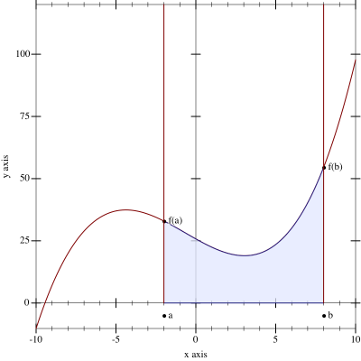
(define (constant x) 20)
(check-expect (integrate constant 12 22) 200)
(check-expect (integrate linear 0 10) 100)
(define ε 0.1) ; [Number -> Number] Number Number -> Number ; computes the area under the graph of f between a and b ; assume (< a b) holds (check-within (integrate (lambda (x) 20) 12 22) 200 ε) (check-within (integrate (lambda (x) (* 2 x)) 0 10) 100 ε) (check-within (integrate (lambda (x) (* 3 (sqr x))) 0 10) 1000 ε) (define (integrate f a b) #i0.0)
Figure 165 collects the result of the first three steps of the design recipe. The figure adds a purpose statement and an obvious assumption concerning the two interval boundaries. Instead of check-expect it uses check-within, which anticipates the numerical inaccuracies that come with computational approximations in such calculations. Analogously, the header of integrate specifies #i0.0 as the return result, signaling that the function is expected to return an inexact number.
The following two exercises show how to turn domain knowledge into integration functions. Both functions compute rather crude approximations. While the design of the first uses only mathematical formulas, the second also exploits a bit of structural design ideas. Solving these exercises creates the necessary appreciation for the core of this section, which presents a generative-recursive integration algorithm.
divide the interval into half at mid = (a + b) / 2;
- compute the areas of these two trapezoids:
[(a,0),(a,f(a)),(mid,0),(mid,f(mid))]
[(mid,0),(mid,f(mid)),(b,0),(b,f(b))];
then add the two areas.


Design the function integrate-kepler. That is, turn the mathematical knowledge into an ISL+ function. Adapt the test cases from figure 165 to this use. Which of the three tests fails and by how much?
Exercise 459. Another simple integration method divides the area into many small rectangles. Each rectangle has a fixed width and is as tall as the function graph in the middle of the rectangle. Adding up the areas of the rectangles produces an estimate of the area under the function’s graph.
R = 10
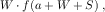

Turn the description of the process into an ISL+ function. Adapt the test cases from figure 165 to this case.
The more rectangles the algorithm uses, the closer its estimate is to the actual area. Make R a top-level constant and increase it by factors of 10 until the algorithm’s accuracy eliminates problems with an ε value of 0.1.
Decrease ε to 0.01 and increase R enough to eliminate any failing test cases again. Compare the result to exercise 458.
The Kepler method of exercise 458 immediately suggests a divide-and-conquer strategy like binary search introduced in Binary Search. Roughly speaking, the algorithm would split the interval into two pieces, recursively compute the area of each piece, and add the two results.
Exercise 460. Develop the algorithm integrate-dc, which integrates a function f between the boundaries a and b using a divide-and-conquer strategy. Use Kepler’s method when the interval is sufficiently small.
The divide-and-conquer approach of exercise 460 is wasteful. Consider a function whose graph is level in one part and rapidly changes in another; see figure 166 for a concrete example. For the level part on the graph, it is pointless to keep splitting the interval. It is just as easy to compute the trapezoid for the complete interval as for the two halves. For the “wavy” part, however, the algorithm must continue dividing the interval until the irregularities of the graph are reasonably small.
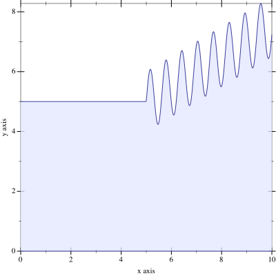
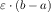
Exercise 461. Design integrate-adaptive. That is, turn the recursive process description into an ISL+ algorithm. Make sure to adapt the test cases from figure 165 to this use.
Do not discuss the termination of integrate-adaptive.
Does integrate-adaptive always compute a better answer than either integrate-kepler or integrate-rectangles? Which aspect is integrate-adaptive guaranteed to improve?
Terminology The algorithm is called adaptive integration because it automatically allocates time to those parts of the graph that need it and spends little time on the others. Specifically, for those parts of f that are level, it performs just a few calculations; for the other parts, it inspects small intervals to decrease the error margin. Computer science knows many adaptive algorithms, and integrate-adaptive is just one of them.
28.3 Project: Gaussian Elimination
Sample Problem In a bartering world, the values of coal (x), oil (y), and gas (z) are determined by these exchange equations: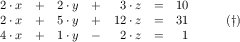
x = 1, y = 1, and z = 2.
10 = 10, 31 = 31, and 1 =1.
; An SOE is a non-empty Matrix. ; constraint for (list r1 ... rn), (length ri) is (+ n 1) ; interpretation represents a system of linear equations ; An Equation is a [List-of Number]. ; constraint an Equation contains at least two numbers. ; interpretation if (list a1 ... an b) is an Equation, ; a1, ..., an are the left-hand-side variable coefficients ; and b is the right-hand side ; A Solution is a [List-of Number] (define M ; an SOE (list (list 2 2 3 10) ; an Equation (list 2 5 12 31) (list 4 1 -2 1))) (define S '(1 1 2)) ; a Solution
Figure 167 introduces a data representation for our problem domain. It includes an example of a system of equations and its solution. This representation captures the essence of a system of equations, namely, the numeric coefficients of the variables on the left-hand side and the right-hand-side values. The names of the variables don’t play any role because they are like parameters of functions; meaning, as long as they are consistently renamed the equations have the same solutions.
; Equation -> [List-of Number] ; extracts the left-hand side from a row in a matrix (check-expect (lhs (first M)) '(2 2 3)) (define (lhs e) (reverse (rest (reverse e)))) ; Equation -> Number ; extracts the right-hand side from a row in a matrix (check-expect (rhs (first M)) 10) (define (rhs e) (first (reverse e)))
Exercise 462. Design the function check-solution. It consumes an SOE and a Solution. Its result is #true if plugging in the numbers from the Solution for the variables in the Equations of the SOE produces equal left-hand-side values and right-hand-side values; otherwise the function produces #false. Use check-solution to formulate tests with check-satisfied.
Hint Design the function plug-in first. It consumes the left-hand side of an Equation and a Solution and calculates out the value of the left-hand side when the numbers from the solution are plugged in for the variables.
Gaussian elimination is a standard method for finding solutions to systems of linear equations. It consists of two steps. The first step is to transform the system of equations into a system of different shape but with the same solution. The second step is to find solutions to one equation at a time. Here we focus on the first step because it is another interesting instance of generative recursion.
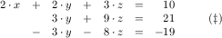
Exercise 465. Design subtract. The function consumes two Equations of equal length. It “subtracts” a multiple of the second equation from the first, item by item, so that the resulting Equation has a 0 in the first position. Since the leading coefficient is known to be 0, subtract returns the rest of the list that results from the subtractions.
; A TM is an [NEList-of Equation] ; such that the Equations are of decreasing length: ; n + 1, n, n - 1, ..., 2. ; interpretation represents a triangular matrix
Do not yet deal with the termination step of the design recipe.
Exercise 467. Revise the algorithm triangulate from exercise 466 so that it rotates the equations first to find one with a leading coefficient that is not 0 before it subtracts the first equation from the remaining ones.
Does this algorithm terminate for all possible system of equations?
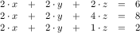
Exercise 468. Modify triangulate from exercise 467 so that it signals an error if it encounters an SOE whose leading coefficients are all 0.
Exercise 469. Design the solve function. It consumes triangular SOEs and produces a solution.
Hint Use structural recursion for the design. Start with the design of a function that solves a single linear equation in n+1 variables, given a solution for the last n variables. In general, this function plugs in the values for the rest of the left-hand side, subtracts the result from the right-hand side, and divides by the first coefficient. Experiment with this suggestion and the above examples.
Challenge Use an existing abstraction and lambda to design solve.
Exercise 470. Define gauss, which combines the triangulate function from exercise 468 and the solve function from exercise 469.
29 Algorithms that Backtrack
Problem solving doesn’t always progress along some straight line. Sometimes we may follow one approach and discover that we are stuck because we took a wrong turn. One obvious option is to backtrack to the place where we made the fateful decision and to take a different turn. Some algorithms work just like that. This chapter presents two instances. The first section deals with an algorithm for traversing graphs. The second one is an extended exercise that uses backtracking in the context of a chess puzzle.
29.1 Traversing Graphs
Graphs are ubiquitous in our world and the world of computing. Imagine a group of people, say, the students in your school. Write down all the names, and connect the names of those people who know each other. You have just created your first undirected graph.
Now take a look at figure 168, which displays a small directed
graph. It consists of seven nodes—
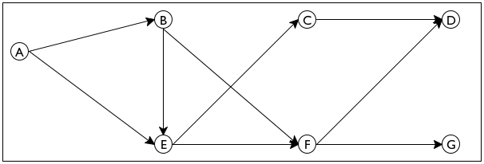
Sample Problem Design an algorithm that proposes a way to introduce one person to another in a directed email graph for a large company. The program consumes a directed graph representing established email connections and two email addresses. It returns a sequence of email addresses that connect the first email with the second.
send email from E to F and then to D.
send it from E to C and then to D.
Looking at figure 168 you can easily figure out how to get from
one node to another without thinking much about how you did it. So imagine
for a moment that the graph in figure 168 is a large park. Also
imagine someone says you are located at E and you need to get to
G. You can clearly see two paths, one leading to C and
another one leading to F. Follow the first one and make sure to
remember that it is also possible to get from E to F. Now you
have a new problem, namely, how to get from C to G. The key
insight is that this new problem is just like the original problem; it asks
you to find a path from one node to another. Furthermore, if you can solve
the problem, you know how to get from E to G—
(define sample-graph '((A (B E)) (B (E F)) (C (D)) (D ()) (E (C F)) (F (D G)) (G ())))
(define sample-graph '((A B E) (B E F) (C D) (D) (E C F) (F D G) (G)))
Exercise 471. Translate one of the above definitions into proper list form using list and proper symbols.
; A Node is a Symbol.
Design the function neighbors. It consumes a Node n and a Graph g and produces the list of immediate neighbors of n in g.
; Node Node Graph -> [List-of Node] ; finds a path from origination to destination in G (define (find-path origination destination G) '())
(find-path 'C 'D sample-graph) (find-path 'E 'D sample-graph) (find-path 'C 'G sample-graph)
The result of the function consists of all nodes leading from the origination node to the destination node, including those two.It is easy to imagine others, such as skipping either of the two given nodes. In this case, an empty path could be used to express the lack of a path between two nodes.
Alternatively, since the call itself already lists two of the nodes, the output could mention only the “interior” nodes of the path. Then the answer for the first call would be '() because 'D is an immediate neighbor of 'C. Of course, '() could then no longer signal failure.
; A Path is a [List-of Node]. ; interpretation The list of nodes specifies a sequence ; of immediate neighbors that leads from the first ; Node on the list to the last one. ; Node Node Graph -> [Maybe Path] ; finds a path from origination to destination in G ; if there is no path, the function produces #false (check-expect (find-path 'C 'D sample-graph) '(C D)) (check-member-of (find-path 'E 'D sample-graph) '(E F D) '(E C D)) (check-expect (find-path 'C 'G sample-graph) #false) (define (find-path origination destination G) #false)
If the two given nodes are directly connected with an arrow in the given graph, the path consists of just these two nodes. But there is an even simpler case, namely, when the origination argument of find-path is equal to its destination.
In that second case, the problem is truly trivial and the matching answer is (list destination).
If the arguments are different, the algorithm must inspect all immediate neighbors of origination and determine whether there is a path from any one of those to destination. In other words, picking one of those neighbors generates a new instance of the “find a path” problem.
Finally, once the algorithm has a path from a neighbor of origination to destination, it is easy to construct a complete path from the former to the latter—
just add the origination node to the list.
; [List-of Node] Node Graph -> [Maybe Path] ; finds a path from some node on lo-originations to ; destination; otherwise, it produces #false (define (find-path/list lo-originations destination G) #false)
(define (find-path origination destination G) (cond [(symbol=? origination destination) (list destination)] [else (... origination ... ...(find-path/list (neighbors origination G) destination G) ...)]))
(define (find-path origination destination G) (cond [(symbol=? origination destination) (list destination)] [else (local ((define next (neighbors origination G)) (define candidate (find-path/list next destination G))) (cond [(boolean? candidate) ...] [(cons? candidate) ...]))]))
; Node Node Graph -> [Maybe Path] ; finds a path from origination to destination in G ; if there is no path, the function produces #false (define (find-path origination destination G) (cond [(symbol=? origination destination) (list destination)] [else (local ((define next (neighbors origination G)) (define candidate (find-path/list next destination G))) (cond [(boolean? candidate) #false] [else (cons origination candidate)]))])) ; [List-of Node] Node Graph -> [Maybe Path] ; finds a path from some node on lo-Os to D ; if there is no path, the function produces #false (define (find-path/list lo-Os D G) (cond [(empty? lo-Os) #false] [else (local ((define candidate (find-path (first lo-Os) D G))) (cond [(boolean? candidate) (find-path/list (rest lo-Os) D G)] [else candidate]))]))
Figure 169 contains the complete definition of find-path. It also contains a definition of find-path/list, which processes its first argument via structural recursion. For each node in the list, find-path/list uses find-path to check for a path. If find-path indeed produces a path, that path is its answer. Otherwise, find-path/list backtracks.
Note Trees discusses backtracking in the structural world. A particularly good example is the function that searches blue-eyed ancestors in a family tree. When the function encounters a node, it first searches one branch of the family tree, say the father’s, and if this search produces #false, it searches the other half. Since graphs generalize trees, comparing this function with find-path is an instructive exercise. End
Lastly, we need to check whether find-path produces an answer for all possible inputs. It is relatively easy to check that, when given the graph in figure 168 and any two nodes in this graph, find-path always produces some answer. Stop! Solve the next exercise before you read on.
Exercise 472. Test find-path. Use the function to find a path from 'A to 'G in sample-graph. Which one does it find? Why?
Design test-on-all-nodes, a function that consumes a graph g and determines whether there is a path between any pair of nodes.

For other graphs, however, find-path may not terminate for certain pairs of nodes. Consider the graph in figure 170.
Stop! Define cyclic-graph to represent the graph in this figure.
(find-path 'B 'D cyclic-graph) == .. (find-path 'B 'D cyclic-graph) .. == .. (find-path/list (list 'E 'F) 'D cyclic-graph) .. == .. (find-path 'E 'D cyclic-graph) .. == .. (find-path/list (list 'C 'F) 'D cyclic-graph) .. == .. (find-path 'C 'D cyclic-graph) .. == .. (find-path/list (list 'B 'D) 'D cyclic-graph) .. == .. (find-path 'B 'D cyclic-graph) ..
In summary, the termination argument goes like this. If some given graph is free of cycles, find-path produces some output for any given inputs. After all, every path can only contain a finite number of nodes, and the number of paths is finite, too. The function therefore either exhaustively inspects all solutions starting from some given node or finds a path from the origination to the destination node. If, however, a graph contains a cycle, that is, a path from some node back to itself, find-path may not produce a result for some inputs.
The next part presents a program design technique that addresses just this kind of problem. In particular, it presents a variant of find-path that can deal with cycles in a graph.
Exercise 473. Test find-path on 'B, 'C, and the graph in figure 170. Also use test-on-all-nodes from exercise 472 on this graph.
Exercise 474. Redesign the find-path program as a single function.
Exercise 475. Redesign find-path/list so that it uses an existing list abstraction from figures 95 and 96 instead of explicit structural recursion. Hint Read the documentation for Racket’s ormap. How does it differ from ISL+’s ormap function? Would the former be helpful here?
Note on Data Abstraction You may have noticed that the find-path function does not need to know how Graph is defined. As long as you provide a correct neighbors function for Graph, find-path works perfectly fine. In short, the find-path program uses data abstraction.
As Abstraction says, data abstraction works just like function
abstraction. Here you could create a function abstract-find-path,
which would consume one more parameter than find-path:
neighbors. As long as you always handed
abstract-find-path a graph G from Graph and the
matching neighbors function, it would process the graph
properly. While the extra parameter suggests abstraction in the
conventional sense, the required relationship between two of the
parameters—
When programs grow large, data abstraction becomes a critical tool for the construction of a program’s components. The next volume in the How to Design series addresses this idea in depth; the next section illustrates the idea with another example. End
Exercise 476. Finite State Machines poses a problem concerning finite state machines and strings but immediately defers to this chapter because the solution calls for generative recursion. You have now acquired the design knowledge needed to tackle the problem.
Design the function fsm-match. It consumes the data representation of a finite state machine and a string. It produces #true if the sequence of characters in the string causes the finite state machine to transition from an initial state to a final state.
(define-struct transition [current key next]) (define-struct fsm [initial transitions final]) ; An FSM is a structure: ; (make-fsm FSM-State [List-of 1Transition] FSM-State) ; A 1Transition is a structure: ; (make-transition FSM-State 1String FSM-State) ; An FSM-State is String. ; data example: see exercise 109 (define fsm-a-bc*-d (make-fsm "AA" (list (make-transition "AA" "a" "BC") (make-transition "BC" "b" "BC") (make-transition "BC" "c" "BC") (make-transition "BC" "d" "DD")) "DD"))
; FSM String -> Boolean ; does an-fsm recognize the given string (define (fsm-match? an-fsm a-string) #false)
; [List-of X] -> [List-of [List-of X]] ; creates a list of all rearrangements of the items in w (define (arrangements w) (cond [(empty? w) '(())] [else (foldr (lambda (item others) (local ((define without-item (arrangements (remove item w))) (define add-item-to-front (map (lambda (a) (cons item a)) without-item))) (append add-item-to-front others))) '() w)])) (define (all-words-from-rat? w) (and (member (explode "rat") w) (member (explode "art") w) (member (explode "tar") w))) (check-satisfied (arrangements '("r" "a" "t")) all-words-from-rat?) Figure 171: A definition of arrangements using generative recursion
given a word, create all possible rearrangements of the letters.
Explain the design of the generative-recursive version of arrangements. Answer all questions that the design recipe for generative recursion poses, including the question of termination.
Does arrangements in figure 171 create the same lists as the solution of Word Games, the Heart of the Problem?
Figure 172: A chess board with a single queen and the positions it threatens

29.2 Project: Backtracking
The n queens puzzle is a famous problem from the world of chess that also illustrates the applicability of backtracking in a natural way. For our purposes, a chess board is a grid of n by n squares. The queen is a game piece that can move in a horizontal, vertical,We thank Mark Engelberg for his reformulation of this section. or diagonal direction arbitrarily far without “jumping” over another piece. We say that a queen threatens a square if it is on the square or can move to it. Figure 172 illustrates the notion in a graphical manner. The queen is in the second column and sixth row. The solid lines radiating out from the queen go through all those squares that are threatened by the queen.
The classical queens problem is to place 8 queens on an 8 by 8 chess board such that the queens on the board don’t threaten each other. Computer scientists generalize the problem and ask whether it is possible to place n queens on a n by n, chess board such that the queens don’t pose a threat to each other.
For n = 2, the complete puzzle obviously has no solution. A queen placed on any of the four squares threatens all remaining squares.
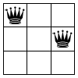 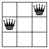
Figure 173: Three queen configurations for a 3 by 3 chess board

There is also no solution for n = 3. Figure 173 presents all different placements of two queens, that is, solutions for k = 3 and n = 2. In each case, the left queen occupies a square in the left column while a second queen is placed in one of two squares that the first one does not threaten. The placement of a second queen threatens all remaining, unoccupied squares, meaning it is impossible to place a third queen.
Exercise 478. You can also place the first queen in all squares of the top-most row, the right-most column, and the bottom-most row. Explain why all of these solutions are just like the three scenarios depicted in figure 173.
This leaves the central square. Is it possible to place even a second queen after you place one on the central square of a 3 by 3 board?
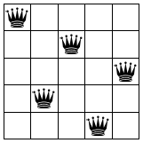
Figure 174: Solutions for the n queens puzzle for 4 by 4 and 5 by 5 boards

Figure 174 displays two solutions for the n queens puzzle: the left one is for n = 4, the right one for n = 5. The figure shows how in each case a solution has one queen in each row and column, which makes sense because a queen threatens the entire row and column that radiate out from its square.
Now that we have conducted a sufficiently detailed analysis, we can proceed to the solution phase. The analysis suggests several ideas:
The problem is about placing one queen at a time. When we place a queen on a board, we can mark the corresponding rows, columns, and diagonals as unusable for other queens.
For another queen, we consider only nonthreatened spots.
Just in case this first choice of a spot leads to problems later, we remember what other squares are feasible for placing this queen.
If we are supposed to place a queen on a board but no safe squares are left, we backtrack to a previous point in the process where we chose one square over another and try one of the remaining squares.
(define QUEENS 8) ; A QP is a structure: ; (make-posn CI CI) ; A CI is an N in [0,QUEENS). ; interpretation (make-posn r c) denotes the square at ; the r-th row and c-th column
The definition for CI could use [1,QUEENS] instead of [0, QUEENS), but the two definitions are basically equivalent and counting up from 0 is what programmers do. Similarly, the so-called algebraic notation for chess positions uses the letters 'a through 'h for one of the board’s dimensions, meaning QP could have used CIs and such letters. Again, the two are roughly equivalent and with natural numbers it is easier in ISL+ to create many positions than with letters.
Exercise 479. Design the threatening? function. It consumes two QPs and determines whether queens placed on the two respective squares would threaten each other.
Domain Knowledge (1) Study figure 172. The queen in this figure threatens all squares on the horizontal, the vertical, and the diagonal lines. Conversely, a queen on any square on these lines threatens the queen.
(2) Translate your insights into mathematical conditions that relate the squares’ coordinates to each other. For example, all squares on a horizontal have the same y-coordinate. Similarly, all squares on one diagonal have coordinates whose sums are the same. Which diagonal is that? For the other diagonal, the differences between the two coordinates remain the same. Which diagonal does this idea describe?
Hint Once you have figured out the domain knowledge, formulate a test suite that covers horizontals, verticals, and diagonals. Don’t forget to include arguments for which threatening? must produce #false.
Exercise 480. Design render-queens. The function consumes a natural number n, a list of QPs, and an Image. It produces an image of an n by n chess board with the given image placed according to the given QPs.
You may wish to look for an image for a chess queen on-line or create a simplistic one with the available image functions.
; N -> [Maybe [List-of QP]] ; finds a solution to the n queens problem ; data example: [List-of QP] (define 4QUEEN-SOLUTION-2 (list (make-posn 0 2) (make-posn 1 0) (make-posn 2 3) (make-posn 3 1))) (define (n-queens n) #false)
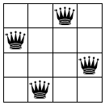
; N -> [Maybe [List-of QP]] ; finds a solution to the n queens problem (define 0-1 (make-posn 0 1)) (define 1-3 (make-posn 1 3)) (define 2-0 (make-posn 2 0)) (define 3-2 (make-posn 3 2)) (check-member-of (n-queens 4) (list 0-1 1-3 2-0 3-2) (list 0-1 1-3 3-2 2-0) (list 0-1 2-0 1-3 3-2) (list 0-1 2-0 3-2 1-3) (list 0-1 3-2 1-3 2-0) (list 0-1 3-2 2-0 1-3) ... (list 3-2 2-0 1-3 0-1)) (define (n-queens n) (place-queens (board0 n) n))
Exercise 481. The tests in figure 175 are awful. No real-world programmer ever spells out all these possible outcomes.
; [List-of QP] -> Boolean ; is the result equal [as a set] to one of two lists (define (is-queens-result? x) (or (set=? 4QUEEN-SOLUTION-1 x) (set=? 4QUEEN-SOLUTION-2 x)))
; Board N -> [Maybe [List-of QP]] ; places n queens on board; otherwise, returns #false (define (place-queens a-board n) #false)
; N -> Board ; creates the initial n by n board (define (board0 n) ...) ; Board QP -> Board ; places a queen at qp on a-board (define (add-queen a-board qp) a-board) ; Board -> [List-of QP] ; finds spots where it is still safe to place a queen (define (find-open-spots a-board) '())
You cannot confirm yet that your solution to the preceding exercise works because it relies on an extensive wish list. It calls for a data representation of Boards that supports the three functions on the wish list. This, then, is your remaining problem.
a Board collects those positions where a queen can still be placed;
a Board contains the list of positions where a queen has been placed;
a Board is a grid of n by n squares, each possibly occupied by a queen. Use a structure with three fields to represent a square: one for x, one for y, and a third one saying whether the square is threatened.
Challenge Use all three ideas to come up with three different data representations of Board. Abstract your solution to exercise 482 and confirm that it works with any of your data representations of Board.
30 Summary
This fifth part of the book introduces the idea of eureka! into program design. Unlike the structural design of the first four parts, eureka! design starts from an idea of how the program should solve a problem or process data that represents a problem. Designing here means coming up with a clever way to call a recursive function on a new kind of problem that is like the given one but simpler.
Keep in mind that while we have dubbed it generative recursion, most computer scientists refer to these functions as algorithms.
The standard outline of the design recipe remains valid.
The major change concerns the coding step. It introduces four new questions on going from the completely generic template for generative recursion to a complete function. With two of these questions, you work out the “trivial” parts of the solution process; and with the other two you work out the generative solution step.
The minor change is about the termination behavior of generative recursive functions. Unlike structurally designed functions, algorithms may not terminate for some inputs. This problem might be due to inherent limitations in the idea or the translation of the idea into code. Regardless, the future reader of your program deserves a warning about potentially “bad” inputs.
You will encounter some simple or well-known algorithms in your real-world programming tasks, and you will be expected to cope. For truly clever algorithms, software companies employ highly paid specialists, domain experts, and mathematicians to work out the conceptual details before they ask programmers to turn the concepts into programs. You must also be prepared for this kind of task, and the best preparation is practice.